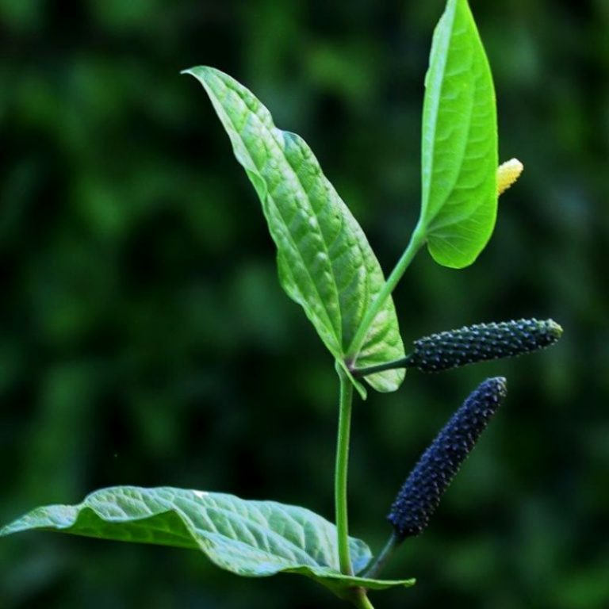

Latthe Education Society's Acharya Deshabhushan Ayurvedic Medical College And Hospital Bedkihal-Shamanewadi, 591214
Department of Dravyaguna Vigyana

Basonym of Drug
Pippali
Main Synonym
Kana
Krishna
Kola
Chapala
Tikshna Tandula
Magadhi
Vaidehi
Ushana
Soundi
Regional Name
Bengali: Pipul
Gujarati: Pipar
Hindi: Pipal
Marathi: Pipali
Tamil: Tippili
Telugu: Pippalu
Botanical Name
Piper longum Linn
Family
Piperaceae
External Morphology
A slender climber
Useful Parts
Fruit
Root
Important Phytoconstituent
Piperine
Piperethine
Piperolein
Caryophyllene
Pipercide
Citronellol
Dihydrocarveol
Beta-Caryophyllene
Beta-Sitosterol
Rasa Panchak
Rasa: Katu
Guna: Laghu, Snigdha
Virya: Ushna
Vipaka: Madhura
Action
Vatakaphahara
Therapeutic Indication
Deepan (Appetizer)
Pachana (Digestive)
Kasahara (Anti-cough)
Swasahara (Anti-asthmatic)
Krimighna (Anti-helminthic)
Shoolahara (Pain reliever)
Lekhna (Scraping of excessive fat)
Rasayana (Rejuvenating)
Therapeutic Uses
Swasa:
Powder of Pippali, Amla, and Sunthi with honey is given in asthma and excessive cough.
Kasa:
Vardhaman Pippali Rasayana is useful in chronic cough.
Jirna Jwara:
Pippali triturate in mortar for 64 prahara (192 hours) is useful in chronic fever.
Prasuta Jwara:
Pippali is given with Ghrita for detoxification in the mother of a newborn baby in fever.
Dose
Powder - 250-500 mg
Formulations
Tribhuvankirt Rasa
Trikatu Churna
Pippalyadi Leha
Vyoshadi Vati
Yakrutplihari Loha
Pippalyasava
Yakrutpippali Yoga
Adverse Effect
Not Known
Remedial Measure
Not required
Purification
Not required